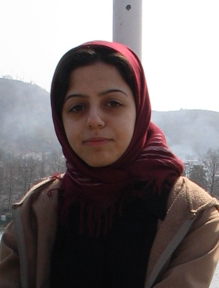

پذيرش > تریبون > مقالات > برزخ ماندن و رفتن/ زینب پیغمبرزاده


 برزخ ماندن و رفتن/ زینب پیغمبرزاده برزخ ماندن و رفتن/ زینب پیغمبرزاده
27 اردیبهشت 1389 - - نسخه قابل چاپ
تغییر برای برابری - در آن ظهر گرم تابستان به بازجویی که با تمسخر پرسید: "شما که می گین اونجا بهشته چرا نمی رین؟ مگه نمی گین ایران آزادی نیست؟ و ... ." گفتم که به اینجا تعلق دارم، می مانم و می سازمش...
این روزها بعضی ها راه های سنگلاخ را در پیش می گیرند تا جانشان را نجات دهند. بعضی ها در جستجوی آینده شغلی و تحصیلی می روند. درهای دانشگاه ها به رویشان بسته است و بازار کار هم جایی برای شان ندارد. گروهی می گویند در فضای آزاد بهتر می توانند اطلاع رسانی و تحلیل ارائه کنند. حالا که همه دارند می روند، می ترسم جنبشی باقی نماند که خارج نشینان تحلیلش کنند. شاید فقط خبرهای بد بماند برای آنکه پای کیبردمان برایشان اشک بریزیم. بعضی هم از این فرصت برای تحقق رویای زندگی در بهشت آرزو هایشان استفاده می کنند و هر جوری هست خودشان را می رسانند آن طرف. خیلی ها می دانند که قصد فرار ندارند. اما بعضی ها هم مثل من در برزخ میان رفتن و ماندن می مانند. نوجوان که بودم فکر می کردم درسم را می خوانم و با دست پر برمی گردم. حالا می ترسم بازگشتی در کار نباشد. هیچ وقت فکر نمی کردم دل کندن از این خیابان های پر از دود و بوق و فریاد و موش این قدر سخت باشد.
در یکی از همین خیابان ها بود که آخرهای شب، در آخرین ساعات مجاز تبلیغات انتخاباتی از حال رفتم. دختر و پسر جوانی بیدارم کردند و کشیدندم لای جمعیتی که به سمت میدان ولیعصر می رفت. یک ساعت بعد در میدان، پلیس بلندگوها را قطع کرد و متفرقمان کرد. چند دقیقه بعد، کمی آن طرف تر، در ابتدای بلوار کشاورز با ساسی مانکن می خواندیم. آرزو می کردم سپیده طلوع نکند. از همان روزهای اول اردیبشت هم در نگاه پلیس هایی که کنار خیابان، شعار دادن و سرود خواندمان را فقط تماشا می کردند، خوانده بودم که این تجربه ناباورانه آزادی، آرامش قبل از طوفان است.
خیلی زود رفتار پلیس ها و بسیجی ها طبیعی شد. روی آسفالت های خونی نفس مان از اشک آور و فلفل بند آمد و در تجمع های طولانی بعد از ظهرهای گرم تابستان، در پیاده روها از حال رفتیم. اما همیشه کسی بود که دستمان را بگیرد و آبمان بدهد. خیلی ها فراری بودند و مدام شماره موبایل عوض می کردند. اس ام اس و اینترنت مدام قطع می شد و حسابش از دستمان در می رفت که چند روز از بازداشت دوست مان گذشته، کی چند سال حکم دارد، فلانی کِی مرخصی آمد و فراری ها سرپناهی پیدا کرده اند یا نه؟ کم کم داریم عادت می کنیم که چوبه های دار را هم بشماریم.
یک سال است که آسمان این شهر لعنتی روی سرم خراب می شود. هر خیابان، پارک، کافه و ایستگاه مترویی یادآور دوستی است که مطمئن نیستم کجاست، اما شک ندارم که حالش خوب نیست. از پشت سر، همه رهگذارن را با کسی که آرزو دارم ببینمش، اشتباه می گیرم. از همه وقت نگذاشتن ها، دعواها و حتی شوخی ها پشیمانم. تمام روزهایی که سرمای زمستان تهران تا مغز استخوانم را منجمد می کرد، یاد تابستانی می افتادم که به بچه های تحکیم گفتم: "شماها خیلی زرنگین که فقط تابستان ها می رین اوین" . به شب هایی فکر می کردم که در سلول های کثیف تا صبح از سرما لرزیده بودم، به لباس گرمی که دوستانم نداشتند، آبی که می گفتند سرد است و به آنفولانزایی که بنرهایش روی دیواری های شهر دهن کجی می کرد. حالا به شبی فکر می کنم که شیرین در سوئیت انفرادی بند نسوان اوین، آرزو به دل خداحافظی با خانواده و دوستانش تا آخرین سحرگاه عمرش بیدار ماند.
همیشه فکر می کردم دهه شصت که من آن همه کوچک بودم که در خیابان ها گم می شدم، مردم محله کشتارگاه که آب حوض هاشان هم خونی بود و خاک باغچه هاشان هم خونی بود و تخت کفش هاشان هم خونی بود، چرا کاری نمی کردند. این روزها می ترسم قادر نباشیم جلوی تکرار این تاریخ خونین را هزاران کیلومتر دورتر از دارها، با انقلاب توییتری بگیریم.
ارسال به
بالاترین
،
توییتر
،
فریندفید
،
فیسبوک
در همين بخش :
 دهمین دورۀ مراسم تندیس صدیقه دولت آبادی ۱۳۹۲ دهمین دورۀ مراسم تندیس صدیقه دولت آبادی ۱۳۹۲
کارت پستالهایی به بهانهی هشت مارس و به یاد همهی مبارزین راه برابری
بیانیه بیش از 350 تن از مدافعان حقوق زنان به مناسبت روز جهانی زن؛ زنان هر روز فرودستتر میشوند
لباسی که برای تن ما دوخته اند! /اعظم بهرامی
چالشها و چشمانداز فعالیت مدنی زنان
ديگر بخش ها :
طرح یک میلیون امضا
|
مقالات
|
سایت نوشته ها
|
اخبار
|
گزارش كمپين
|
گفت و گو
|
علیه سکوت
|
كوچه به كوچه
|
نامه های شما
|
گزارش ویژه
|
گفتگو با اعضا
|
ویژه سالگرد کمپین
|
تصویر برابری
|
دل آرام علی
|
تریبون
|
مقالات
|
تاریخ شفاهی
|
خارج از چارچوب
|
کتابخانه
|
درباره کمپین
|
کمپین در شهرها
|
کمپین در بند
|
صدای تغییر
|
ویژه 22 خرداد
|
لایحه حمایت از خانواده
|
گالری
|
عشا مومنی
|
امیر یعقوبعلی
|
خدیجه مقدم
|
راحله عسگری زاده و نسیم خسروی
|
پروین اردلان،جلوه جواهری، مریم حسین خواه، ناهید کشاورز
|
زینب پیغمبرزاده
|
سعیده امین، سارا ایمانیان، محبوبه حسین زاده، ناهید کشاورز و همایون نامی
|
احترام شادفر
|
نسیم سرابندی زاده،فاطمه دهدشتی
|
وبلاگ مهمان
|
پرونده خرم آباد
|
دستگیری ها
|
مریم مالک
|
پرستو اللهیاری
|
مهرنوش اعتمادی
|
سمیه رشیدی
|
Other Languages
|
همراهان
|
«فراخوان کمپین ده روز با بهاره هدایت»
| English
|